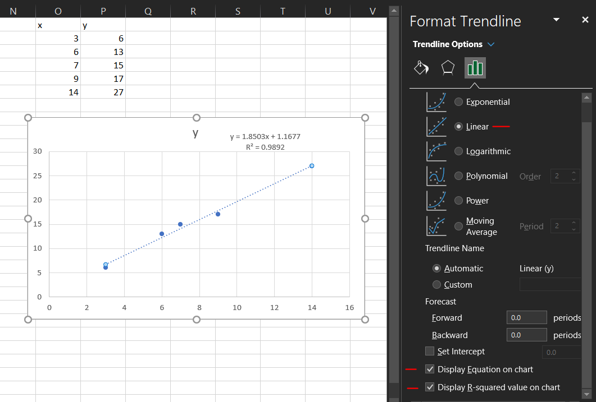

Multivariable Calculus & Introduction to Linear and Multilinear Regression
Definition
Consider the data below.
x
1
2
3
4
5
6
y
69.2
86.0
109.5
128.4
140.8
158.7
When we graph this data, we can see a linear trend so we might want to fit the data with a linear model in the form
\(y = mx + b\).
The task for us is then to find the values of the parameters \(m\) and \(b\).
There are many ways to do this, but here we are going to take a calculus approach.
We say the line of best fit is the line that minimizes the square error between the data points and the line.
$$E = \sum_{i=1}^n (mx_i + b - y_i)^2$$
Questions
In the formula for \(E\) above, what does the term \(mx_i + b\) represent?
What does \(y_i\) represent?
What is \(mx_i + b - y_i\)?
Why is this squared?
Our approach to finding the values of the parameters in the line of best fit, \(m\) and \(b\), is to minimize \(E\).
To do this we will treat \(E \equiv E(m,b)\) as a function of \(m\) and \(b\).
Thus the parameters are now our variables. We will say the points \( (x_i,y_i) \) are the data.
Task 1 Find the gradient of \(E\) with respect to \(m\) and \(b\).
Task 2 Set the gradient equal to the zero vector to get two equations for \(m\) and \(b\).
Task 3 Solve these equations for \(m\) and \(b\) in terms of the data to get formulas for the parameters for the line of best fit.
It will help to use summation notation.
Task 4 Find the line of best fit for the data above.
Examples using Technology
Most often we use technology to find the parameters. Below are instructions to find a line of best fit using MS Excel or R.
Use one of these to verify your parameter calculations using the formulas above.
The simplest way to do a one variable linear regression in MS Excel is to create a scatterplot (highlight data and select Insert->Charts->Scatterplot)
of the two variables in question and add a trendline to the plot. To add a trendline, highlight the data and right-click to see the menu with add trendline.
Once in the format trendline dialog box make sure to select 'linear' and 'display equation.' You will see the equation appear in the chart.

There are many ways to do regression in R, here we show a simple way using the 'lm' function.
lm stands for linear models.
We enter two vectors, x and y, using the 'c' command and use lm to calculate the coefficient of x and the intercept in the formula \(y = mx + b\).
Note we don't enter the formula like this in R.
We are just telling R that we want a linear relationship between x and y.
Multiple linear regression
The ideas above can be extended to more complicated data. Consider the data below.
x
y
z
2.1
3.1
23.73101
4.5
5.4
40.11256
6.3
3.2
36.70953
7.8
5.4
50.00016
9.0
6.8
59.23336
Suppose we want to fit this with the linear form \(z = ax + by + c\).
Task 1Use the ideas above to set up three equations for the parameters \(a, b\) and \(c\).
You do not need to solve these equations to find \(a, b\) and \(c\). (yet)
To do multiple linear regression in MS Excel, we first create a new column, or columns, associated with the terms in our proposed formula. In the example below
we are fitting the data to a form \(z = ax + by + cxy\) so we need columns for x,y,xy, and z. We have x,y, and z from the data given so we only need a new column for xy.
Then we want to use the regression module of the Data Analysis Toolpak. This is in the Data tab.
Once in the Regression form, the "Y-data" is our dependent/response data (z in this case) and the "X-data" is the independent/explanatory data (the x,y, and xy columns).
I like to make sure to include the column header and click the Label checkbox for ease in reading the results.
Note we can set the intercept to be zero by checking the appropriate box as well.
We can then read the regression results off the new worksheet.
There is much more information here that we'll leave for your statistics courses and unfortunately neglect for this basic introduction. For now R-squared closer to 1 means a better fit.
The image below shows how to fit a function in the form \(z = ax + by + cxy + d\) using the 'lm' command in R.
First we enter the data vectors using the 'c' command and then call the lm function.
Note the use of the x:y for the product term. x*y may return terms you don't want.
Note that if we don't want a constant (intercept) term, or want it to equal zero, we can call the formula but explicity add the '+0' to force this.
If we want to see the R-squared information we can wrap up the lm function call in the summary command, i.e. "summary(lm(z ~ x + y + x:y))."
Quadratic fitting
Consider the data below.
x
y
1
10.35331
2
24.74658
4
73.33762
6
148.3015
7
195.7026
Plotting this we see the trend isn't quite linear.
However, a quadratic polynomial appears to fit the data very well.
To create a fit in this form we want to find parameters \(a, b\) and \(c\)
that minimize the square error between the data and the regression function in the form
$$y = a + bx + cx^2.$$
Note that this is still considered linear regression since the functional form is still linear in the parameters.
This may also be called by other names such as quadratic regression or polynomial regression.
Question How is this related to the case above?
Task Use the ideas from the previous situations to set up three equations for the parameters \(a, b\) and \(c\).
You do not need to solve these equations to find \(a, b\) and \(c\).
Task We can use MS Excel and/or R to find the values of parameters for this situation.
Follow the steps outlined below to find the values for the data above.
The quickest way to do regression in a polynomial form in MS Excel is very similar to the linear regression.
Create a scatterplot (highlight data and select Insert->Charts->Scatterplot)
of the two variables in question and add a trendline to the plot. To add a trendline, highlight the data and right-click to see the menu with add trendline.
Once in the format trendline dialog box make sure to select 'polynomial,' choose the desired degree, and 'display equation.'
You will see the equation appear in the chart. You can also display the R-squared value.
In R we can treat the \(x^2\) as its own object by wrapping it in the I command.
This prevents confusion in the coding between treating \(x^2\) as part of the formula and as part of the data.
Wrapping the lm command in the summary command let's us see more information, including the R squared value.
Further examples
Find parameters \(a,b,c\) and \(d\) to fit the data below with a form \(z = a + bx + cy + dxy\).
table
Find parameters \(a,b,c\) and \(d\) to fit the data below with a form \(z = a + bx^2 + cy^2 + dxy\).
table
Consider the data below.
table
Which form can be fit using linear regression? Why?
\(y = a\sin(2x) + b\sin(4x)\) or
\(y = \sin(ax) + \sin(bx)\)?
Fit the data with the appropriate form from above.
Closing and look ahead
This is just a very brief introduction to regression.
For more detailed and theoretical explorations of this topic consider taking more courses in mathematics including MATH 275 Linear Algebra, MATH 375 Numerical Linear Algebra, MSCS 335 Machine Learning, and statistics including STAT 331, 332 (Mathematical Statistics) and STAT 396 Advanced Regression.